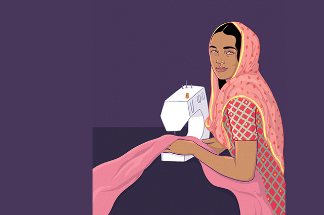

Trigger Warning: These stories mention sexual harrasment
Hear the unheard voices of garment or factory workers in Fashion brands.
Khaing is a sewing machine operator in a garment factory in Myanmar. She has worked there since 2012 and enjoys the job, but is sick and tired of the harassment that the women workers face on a daily basis. She says,“Women feel unsafe because the male workers sometimes try to touch and hold them."" “I feel uncomfortable whenever the supervisor scolds us using rude words, when the mechanics sit and stare at the female workers and tease or make jokes about girls. Especially on Saturdays when they are wearing beautiful dresses.” “I want to continue working in the factory. But sometimes I don’t want to go to work and I am upset by this. I don’t want my wages to be cut off if I don’t go to work.” “I would like to be free from violence and discrimination in my workplace.”
Hanlee, 27, earns money working at a garment factory in Laos. She started out operating a sewing machine before becoming responsible for checking the products that come off the assembly line. Sometimes she feels safe at work, but not always. “It can be hard to be a woman. At work, sometimes there is sexual harassment like staring and rude comments.” Hanlee feels most unsafe at the garment factory dormitory. She has no option but to live there because her home is far away. “Once, the HR officer visited a female worker at the dormitory when she was sick and he harassed her,” Hanlee recounts. He was fired, but Hanlee was still worried that something like this could happen to her. “If I felt sick, I was scared about staying in the dormitory alone. Others who have relatives nearby go to stay with them if they are sick. If I had to stay at the dormitory alone I locked myself in my room.”